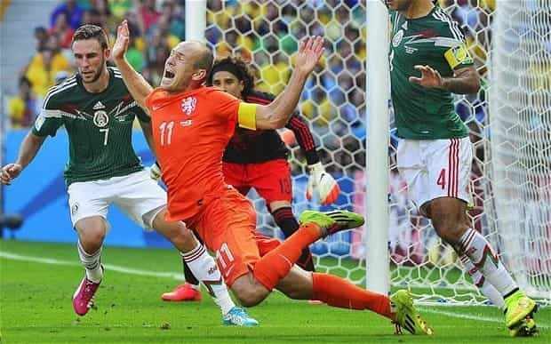
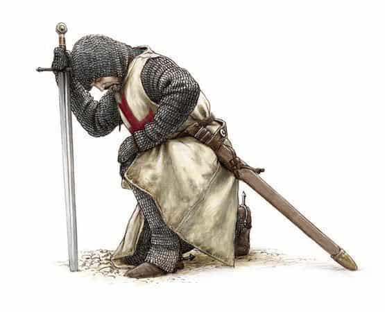

One Englishman promoting the great libertarian values and sociobiological qualities of the West. Visit my page, That Libertarian Chap, here - https://www.facebook.com/thatlibertarianchap


I am not interested in football, neither the American distortion of rugby nor soccer. Unsurprisingly, this can leave one ostracised from many conversations in the workplace and other modern, bourgeois scenarios. Is it because these sports are just too masculine and rough? On the contrary, it is because they are too feminine!
Things only get worse when I explain that I enjoy more masculine, dangerous (not necessarily violent) sports. The very worst reaction comes when I declare it feminine to not be engaged in such sports personally. After a brief, heated discussion, I am usually on the receiving end of the same, silent, frustrated scramble for a good answer. You can forget about mentioning my thoughts on porn – it is hardly alpha male behaviour to masturbate whilst watching another, better-endowed man plough nubile nymphs. This is no digression, mind you; there is something more masculine to being involved in the action, whether conquering foes or fair maidens.
After all, I might dislike football because I am not particularly good at it and, conversely, like wrestling because I was. Perhaps I had the bias and the others were right – aside from all the padding and effeminate diving about with feigned injuries, perhaps watching a match of some bourgeois, team sport was just as masculine as becoming the Ultimate Fighting Champion.
What are the fundamental differences between the aristocratic sports of old, which focus much more on the individual man, and the spectator sports of today, which focus more on some team, seemingly devised to maximise profitability from said spectators?

Where the traditional aristocrat sought, for example, the adventure of mountaineering, the bien pensants bourgeoisie thinks, ‘Why on earth would you be so reckless? You could get hurt!’ The same attitudes apply to the traditional aristocratic sports, such as boxing, wrestling, historical fencing, horse racing and jousting.
Notice how these sports focus on the individuals, often dueling one against the other. A certain sense of transcendence is required to engage in such daring activities, elevating the noble above mere practical concerns in their struggle for glory – immortal fame, as it were. Once you conquer the mountain, conquer your foe and, in so doing, conquer your fear, you have in a certain sense conquered yourself; winner or loser, the shaking of peers’ hands afterwards is, yes, out of Christian charity, but also a showing of respect for those on the same noble quest.
Acclaimed historian, Jacques Barzun’s book, From Dawn to Decadence: 500 Years of Western Cultural Life, describes the uneasy relationship between the old, knightly order and the newly developing, modern state, headed by an increasingly dominant bourgeoisie, merchant class. On the subject of duels, he wrote that the ‘desire for self-vindication is deeply ingrained in western man.’
Up to the early modern and revolutionary periods, this ‘was called “the point of honor.” Its moral force derived from medieval chivalry, which regarded the knight as the champion of all that is noble and fair and as an independent judge in his own cause. No monarch wanted his subjects to lose all of these qualities, and the ethos persisted.’ Time has since eroded any such regard for masculine virtue, however.
Barzun uses the example of the bourgeois, French monarch, Louis XIV, who led the transition not only from kingship to monarch but also from the quest for honour to quests for honours: ‘titles, decorations, favors slight in themselves but of infinite value, such as being spoken to by the king before anyone else among a cluster of courtiers.
As for the love of titles and decorations, it has become the rage in the democracies—prizes for everything and everyone.’ Thus, a mere glance at the transition from the medieval to the modern period can give us a clear picture of how far removed the modern, Western man is from his self-vindicating ancestors; whereas the modern bourgeoisie relies on the ubiquitous state to act as middle-man and safety net for all social interactions, and has no communal or cultural authority in his life except for the state, this is a far cry from the chivalry of old.

It is the generally irresponsible attitude of the modernist, bourgeois mind that I take exception to. For over five hundred years now, Western man has been palming off responsibilities to some far off group, purporting to be the Leviathan state, all in exchange for comforts. Of course, we are increasingly comfortable and entertained. I can’t complain, but we are also increasingly detached from reality, hardship and the consequent gumption to fight for what is ours, let alone to fight for what is right, good and true.
So, when I see grown men talking with the depth of a philosopher on the eve of battle about what is effectively a game for juveniles, and one in which they shall not participate and indeed will be played by overpaid foreigners, not even kinsmen of their beloved region, I dare not laugh, as these are the death throes of my civilisation.
I cannot help but agree with reactionaries of the 20th century in this regard, but this is no idle or defunct theory and I am in good company – the work of Prof. Walter J. Ong on the subject of masculinity confirmed these intuitions from the data regarding male development and competition:
‘Historically, the agonistic, masculinising era has given way to one of greater femininity. In a sense, the male television sports watcher…[described elsewhere as] slumped alone with his can of beer before the screen under the glare of his justifiably outraged sports widow…is a product of a highly feminized culture: no earlier oral-agonistic age could have produced this abstract half-disinvolvement with the agōnia in the arena.’
I would recommend his excellent work, Fighting for Life: Contest, Sexuality and Consciousness, but more than this, I would recommend we all revolt against the modern world by striving against such disinvolvement, by becoming more engaged in our communities and also in sports which really test our personal mettle. I realise this will be hard for some of us to come to terms with, but, as the proverb says,
Proverbs 27:17 Iron sharpeneth iron, so a man sharpeneth the countenance of his friend.
Read More: Why Chivalry Is Dead